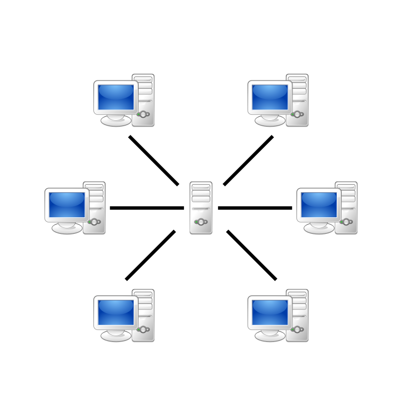

Dataroo
Distributed Hash Table
This post will outline an application of peer-to-peer (P2P) networking, specifically a P2P database that I created using a distributed hash table. The application is by no means robust or deployable at large scale, but is rather a small local application that mainly served as a teaching exercise on the concept of distributed hash tables and other networking topics. Hopefully my outline of the techniques I used will be helpful to those of you who may be implementing a similar application, or those who simply want to learn more about P2P networking.

Peer-to-Peer Network

Client-Server Network
A quick intro for those unfamiliar, a P2P architecture involves many nodes (or peers) that each have similar responsibilities and capabilities, as opposed to a more traditional client-server architecture that has nodes classified as either client or server, each performing a very different function of the network. P2P networks are unique because they are decentralized, having no always-on server that provides content to the clients. Instead each participant in the P2P network must act as both a supplier and consumer, simultaneously searching for content it does not have while spreading the content it does have throughout the network.
If a peer leaves the network for some reason, either intentionally or unintentionally, the system is able to adapt very easily as it doesn’t rely on any single peer. This provides the network with a high level of flexibility and leads to fewer scenarios that would leave the network completely unusable. The concept of decentralization is not restricted to networking, and can be seen in many different fields like transportation (ride sharing services like Uber and Bird take advantage of decentralized cars and scooters to create a more flexible transportation architecture).
File Distribution
A great application of P2P networks is file distribution, which is the foundation of websites like Napster and BitTorrent. The two sites use different methods, but they both take advantage of P2P networking to deliver files from one user to another. The application outlined here does a very similar thing, taking the concept of a centralized database that uses key/value pairs and reapplying it to work with a decentralized P2P network. This is called a distributed hash table (DHT).
When using a DHT, the key/value convention is used to determine where a specific file is located. They key specifies the file name, which must be unique across the database. The value specifies the IP address of the peer that has that file. Of course, the system needs to somehow keep track of these key/value pairs so that when a peer needs to get a file, it knows the IP of the peer it needs to connect with. One solution to this would be for each peer to keep a list of the key/value pairs for every file in the network, but keeping this list accurate and synchronized across each peer is not very feasible.
Instead we can assign an identifier to each peer, say an integer in the range of [0, 2^n - 1] for some fixed n. The DHT can then require each key to be the same range, utilizing a hash function if needed. The DHT establishes a rule for assigning keys to peers, typically the rule involves choosing a peer whos identifier is closest to the key. Each peer keeps track of the peer directly ahead of it, then when a peer needs to find a file at a certain key, peer can message each peer ahead of it until it gets to the correct peer that encompasses the key, and thus the file.
Implementation of a Distributed Hash Table
Rather than explaining all of the subtleties of a DHT, I feel that it is best to outline my implementation of it and explain some of its features along the way. `insert github link here`
Since the whole point of this exercise to create a simulated network of peers, the implementation should not be contained in a single script. Rather I designed a python script that, when executed from the command line, will initialize a single peer in the network. To keep the functions of the peer clear and organized, I created the class Peer which creates a single instance of a peer in the network.
class Peer():
def __init__(self, id_in, next_id, next_next_id, mss, drop_prob):
def pingServerInit(self):
def pingSuccessors(self):
def tcpServerInit(self):
def fileTransfer(self, rec_id, file):
def fileReceive(self):
__init__
def __init__(self, id_in, next_id, next_next_id, mss, drop_prob):
self.host = "127.0.0.1"
self.id = id_in
self.next_id = next_id
self.next_next_id = next_next_id
self.mss = mss
self.drop_prob = drop_prob
self.predecessor = -1
self.prepredecessor = -1
self.start_time = time.time()
The __init__ function of the peer class is not very complicated, it simply sets a few constants that are needed for the DHT to function properly.
▪ Current ID, Next ID, Next ID’s Next ID - Keeping track of these id’s is important for the structure of the circular DHT. (I have not mentioned before that my DHT is circular, this just means the last peer in the network will point back to the first peer, creating a circle of peer dependencies.) One major issue of my design is that the structure of the DHT hash table must be determined before the initialization of the peers. This means that every time a peer is added to the network, the entire network must be restarted. On a more robust, large scale network this would need to be fixed, but for my example network I chose to focus on fixing the issue of peers leaving.
▪ Maximum Segment Size (mss) - The MSS simply sets the maximum segment size for any particular message file transfer segment. When sending files over networks, the sender typically must break the file into smaller segments, then the receiver on the other end reconstructs those packets back into the original file. The reason for this originally stems from a concept called multiplexing. Instead of creating a connection over a networking and sending large messages or files over a single continuous stream of bytes, our modern networking systems rely on packet switching to send data in chunks. This allows for more users to actually use the network at once and is great for bursty data.
▪ Drop Probability (drop_prob) - The drop probability is used to simulate unreliable data transfer in the network. Transport protocols like TCP and UDP take different steps to counteract the possibility of packets being dropped during a transfer on the network, some of which I have implemented in the file transfer and file receive functions.
▪ Predecessor and Predecessor of the Predecessor - These get assigned once the peers start pinging each other, which I will explain next.
In order for the peers to keep track of who is actually still in the network, they must constantly ping each other. If a peer receives a ping, it should respond to whichever peer sent the ping to let that peer know it is still in the network.
pingServerInit
def pingServerInit(self):
server_socket = socket.socket(socket.AF_INET, socket.SOCK_DGRAM)
server_socket.bind((self.host, 50000 + self.id))
while True:
message, address = server_socket.recvfrom(1024)
message_text = message.decode()
# Ping Response
if message_text[:4] == "PING":
print("A ping request message was received from Peer %s." % message_text[5:])
if message_text[4] == '1':
self.predecessor = int(message_text[5:])
elif message_text[4] == '2':
self.prepredecessor = int(message_text[5:])
else:
print("PROTOCOL ERROR")
response_string = "PING" + str(self.id)
response = response_string.encode()
server_socket.sendto(response, address)
else:
print("ERROR: COULD NOT IDENTIFY PACKET RECEVIED OVER UDP PORT %d" % 50000 + self.id)
The pingServerInit function sets up a server in order to listen for these pings, and send a response once a ping has been received. It creates a UDP socket which sits in a continuous loop, waiting for UDP ping messages from its first and second predecessors. It then responds to those ping messages, confirming that it is still alive. This function also updates the id of the peers first and second predecessor variables every time it receives a PING message. The ping message contains a field indicating whether the ping came from the first or second predecessor, and the id of that predecessor.
pingSuccessors
def pingSuccessors(self):
first_drop_count = 0
second_drop_count = 0
while True:
if first_drop_count > 4:
print("Peer %d no longer alive." % self.next_id)
sock = socket.socket(socket.AF_INET, socket.SOCK_STREAM)
departure_message_text = "K1"
departure_message = departure_message_text.encode()
sock.connect((self.host, 50000 + self.next_next_id))
sock.send(departure_message)
response = sock.recv(1024)
sock.close()
response_text = response.decode()
self.next_id = self.next_next_id
self.next_next_id = int(response_text)
print("My first successor is now peer %d." % self.next_id)
print("My second successor is now peer %d." % self.next_next_id)
first_drop_count = 0
if second_drop_count > 5:
print("Peer %d no longer alive." % self.next_next_id)
sock = socket.socket(socket.AF_INET, socket.SOCK_STREAM)
departure_message_text = "K2"
departure_message = departure_message_text.encode()
sock.connect((self.host, 50000 + self.next_id))
sock.send(departure_message)
response = sock.recv(1024)
sock.close()
response_text = response.decode()
self.next_next_id = int(response_text)
print("My first successor is now peer %d." % self.next_id)
print("My second successor is now peer %d." % self.next_next_id)
second_drop_count = 0
time.sleep(5)
client_socket = socket.socket(socket.AF_INET, socket.SOCK_DGRAM)
########## Ping first successor ##########
# client_socket.bind((self.host, 6000 + self.id))
client_socket.settimeout(1.0)
message_string = 'PING1' + str(self.id)
message = message_string.encode()
addr = (self.host, 50000 + self.next_id)
client_socket.sendto(message, addr)
try:
data, server = client_socket.recvfrom(1024)
response = data.decode()
print("A ping response message was received from Peer %s." % response[4:])
first_drop_count = 0
except socket.timeout:
print('PING TO PEER %d TIMED OUT' % self.next_id)
first_drop_count += 1
########## Ping second successor ##########
# client_socket.bind((self.host, 7000 + self.id))
client_socket.settimeout(1.0)
message_string = 'PING2' + str(self.id)
message = message_string.encode()
addr = (self.host, 50000 + self.next_next_id)
client_socket.sendto(message, addr)
try:
data, server = client_socket.recvfrom(1024)
response = data.decode()
print("A ping response message was received from Peer %s." % response[4:])
second_drop_count = 0
except socket.timeout:
print('PING TO PEER %d TIMED OUT' % self.next_next_id)
second_drop_count += 1
The pingSuccessors function is the complement to the pingServerInit function. It continuously sends ping messages to its first and second successors via UDP, then waits for their response. If it does not receive a response after one second, it assume the ping was lost and increment the drop_count for either the first or second successor. If the first drop count reaches 4, the program assumes that the first successor has left the network, and creates a TCP socket to ask its second successor what its new first and second successors should be. Similarly, if the second drop count reaches 5, the program assumes the second successor has left the network, and creates a TCP socket to ask its first successor what its new second successor should be. The second drop count limit is higher than the first drop count limit to ensure that, when a peer unexpectedly leaves, its first predecessor will reevaluate its successors before its second predecessor does. This ensures that the second predecessor will not receive wrong information for the first predecessor. If a peer unexpectedly leaves the network (called peer churn), the peers dynamically change their structure and continue function appropriately.
tcpServerInit
def tcpServerInit(self):
server_socket = socket.socket(socket.AF_INET, socket.SOCK_STREAM)
server_socket.bind((self.host, 50000 + self.id))
server_socket.listen(5)
while True:
conn, address = server_socket.accept()
message = conn.recv(1024)
message_text = message.decode()
if message_text[0] == "K":
response_text = str(self.next_id)
message = response_text.encode()
elif message_text[:3] == "REQ":
file = int(message_text[3:7])
file_hash = file % 256
if file_hash == self.id or (file_hash < self.id and file_hash > self.predecessor) or (file_hash < self.id and self.id < self.predecessor) or (file_hash > self.id and file_hash > self.predecessor and self.id < self.predecessor):
print("File %s is here." % message_text[3:7])
response_text = "RES" + message_text[3:7] + "|" + str(self.id)
response = response_text.encode()
respond_to_peer = int(message_text[8:])
sock = socket.socket(socket.AF_INET, socket.SOCK_STREAM)
sock.connect((self.host, 50000 + respond_to_peer))
sock.send(response)
sock.close()
print("A response message, destined for peer %d, has been sent." % respond_to_peer)
self.fileTransfer(respond_to_peer, message_text[3:7])
print("The file is sent.")
else:
print("File %s is not stored here." % message_text[3:7])
sock = socket.socket(socket.AF_INET, socket.SOCK_STREAM)
sock.connect((self.host, 50000 + self.next_id))
sock.send(message)
sock.close()
print("File request message has been forwarded to my successor.")
elif message_text[:3] == "RES":
print("Received a response message from peer %s, which has the file %s." % (message_text[8:], message_text[3:7]))
self.fileReceive()
print("The file is received.")
else:
split1 = message_text.find("|")
split2 = message_text.find("|", split1 + 1)
split3 = message_text.find("|", split2 + 1)
print("Peer %s will depart from the network." % message_text[split1+1:split2])
if message_text[:split1] == "1":
print("My first successor is now peer %s." % message_text[split2+1:split3])
self.next_id = int(message_text[split2+1:split3])
print("My second successor is now peer %s." % message_text[split3+1:])
self.next_next_id = int(message_text[split3+1:])
elif message_text[:split1] == "2":
print("My first successor is now peer %d." % self.next_id)
print("My second successor is now peer %s." % message_text[split2+1:split3])
self.next_next_id = int(message_text[split2+1:split3])
else:
print("ERROR: INCORRECT PROTOCOL")
conn.close()
continue
conn.send(message)
conn.close()
In addition to starting a server bound to a UDP socket, I also create a server that binds to a TCP socket in the tcpServerInit function. This server listens for 3 different types of messages, each starting with the following identifier.
1) “K”, request to send the id of the peer’s successor back to the message sender. This message is sent when a peer notices that either it’s first or second successor is no longer alive, as outlined in the previous section
2) “REQ”, indicates a file request from another peer. If the file is not located at the current peer, the request is simply forwarded to the peer’s successor through another TCP connection.
3) “RES”, when the file is eventually found, a message with this header is sent back to the original requesting peer. When the peer receives this message, it knows to open another UDP socket to receive the incoming file. The fileTransfer and fileReceive are called by the sending peer and receiving peer, respectively, at this time.
As a quick sidenote, I used a TCP connection to send and receive these messages simply to practice using both TCP and UDP. The two transport protocols do differ in quite a few ways, and it makes sense to use one or the other for some features. For example, using UDP to send the pings between the servers makes sense because:
1) the pings are small and sent frequently, so leveraging a faster, more efficient transport protocol makes a larger difference
2) it doesn’t matter if a ping gets lost once in a while, only the case where many pings go unanswered does the application care
TCP
- slower
- supports reliable transfers
- provides flow control and congestion control
- typically used for unicast
UDP
- faster
- non-guaranteed transfers
- does not provide flow or congestion control
- typically used for unicast, multicast, or broadcast
fileTransfer
def fileTransfer(self, rec_id, file):
print("We now start sending the file ......")
transfer_socket = socket.socket(socket.AF_INET, socket.SOCK_DGRAM)
transfer_socket.settimeout(1.0)
addr = (self.host, 60000 + rec_id)
file_name = str(file) + ".pdf"
f = open(file_name, "rb")
file_data = f.read(self.mss)
resp_log = open("responding_log.txt", "a+b")
seq_num = 0
ack_num = 0
is_resend = False
while(file_data):
message = "SEQ" + str(seq_num) + "ACK" + str(ack_num) + "X" + str(sys.getsizeof(file_data)) + "F"
packet = message.encode('latin-1')
packet = packet + file_data
transfer_socket.sendto(packet, addr)
try:
data, server = transfer_socket.recvfrom(1024)
if not is_resend:
log_message = "snd " + str(time.time() - self.start_time) + " " + str(seq_num) + " " + str(sys.getsizeof(file_data)) + " " + str(ack_num) + "\r\n"
log = log_message.encode("latin-1")
resp_log.write(log)
if is_resend:
log_message = "RTX " + str(time.time() - self.start_time) + " " + str(seq_num) + " " + str(sys.getsizeof(file_data)) + " " + str(ack_num) + "\r\n"
log = log_message.encode("latin-1")
resp_log.write(log)
seq_num += 1
ack_num += 1
is_resend = False
except socket.timeout:
is_resend = True
continue
file_data = f.read(self.mss)
end_message = "DONE"
packet = end_message.encode()
transfer_socket.sendto(packet, addr)
f.close()
resp_log.close()
fileReceive
def fileReceive(self):
print("We now start receiving the file .......")
server_socket = socket.socket(socket.AF_INET, socket.SOCK_DGRAM)
server_socket.bind((self.host, 60000 + self.id))
f = open("received_file.pdf", "wb")
req_log = open("requesting_log.txt", "a+b")
while True:
message, address = server_socket.recvfrom(1024)
message_text = message.decode('latin-1')
if message_text[0:4] == "DONE":
break
random_number = random.random()
index_seq = message_text.find("Q")
index_ack = message_text.find("A")
index_x = message_text.find("X")
index_f = message_text.find("F")
if random_number < self.drop_prob:
log_message = "drop " + str(time.time() - self.start_time) + " " + message_text[index_seq+1:index_ack] + " " + message_text[index_x+1:index_f] + " " + message_text[index_ack+3:index_x] + "\r\n"
log = log_message.encode("latin-1")
req_log.write(log)
continue
file_data = (message_text[index_f+1:]).encode('latin-1')
f.write(file_data)
log_message = "rcv " + str(time.time() - self.start_time) + " " + message_text[index_seq+1:index_ack] + " " + message_text[index_x+1:index_f] + " " + message_text[index_ack+3:index_x] + "\r\n"
log = log_message.encode("latin-1")
req_log.write(log)
ack_text = "ACK"
ack = ack_text.encode()
server_socket.sendto(ack, address)
f.close()
req_log.close()
The fileTransfer function, called by the sending peer, opens a UDP socket on a new port and starts sending the file chunk by chunk. The size of the chunks are determined by the maximum segment size (MSS) variable I mentioned earlier. The fileReceive function is called by the receiving peer in parallel to the fileTransfer function. It opens a UDP socket and waits for the file chunks sent by the sending peer to arrive. It then reconstructs these files chunks into the file the the receiving peer originally requested.
Now, it is important to consider that data transfer is not always reliable nor complete. If any of the file chunks either get lost or corrupted while travelling to the receiving peer, the final reconstructed file will be essentially. It is because of this that we must consider the topic of reliable data transfer. Data transfer over the internet is inherently unreliable, nothing is guaranteed to transfer completely or correctly. There are a few ways that data can be unreliably transferred...
- Data loss
- Data corruption
- Data duplication
- Data reordering
I mentioned before that TCP supports reliable transfers, but UDP does not. This means that TCP employs certain strategies remedy each of these possible scenarios. I choose to transfer my files using UDP so that I could implement one of these strategies myself. The effects of data loss, which manifests in the form of dropped chunks in our situation, can be avoided by resending data that has been lost. Because we are not aware of when a chunk gets lost along the network, we must instead confirm when each packet arrives at the destination, and resend the packet when that confirmation does not happen. The way I implement this confirmation strategy is through acknowledgements. When the receiver actually receives a packet, it sends an acknowledgement message back to the sender to indicate that it has successfully received the packet so that the sender can proceed to send the next packet. If the sender does not receive an acknowledgement message after a certain period of time, it assumes that the packet was lost during transmission, and resends the packet. (Notice that since I am simulating this network locally, it is nearly impossible for packets to be lost, thus I simulate packet loss with a drop probability). Other strategies include checksums to combate data corruption, and sequence numbering to combate data reordering and data duplication.